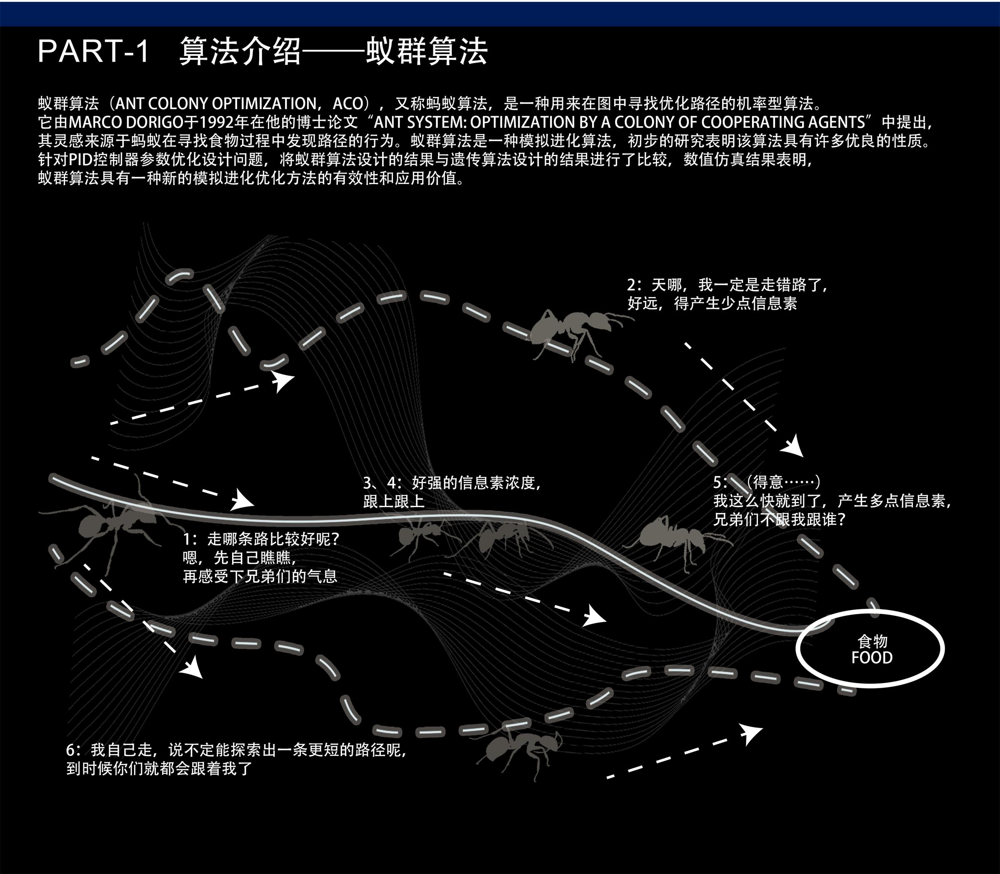
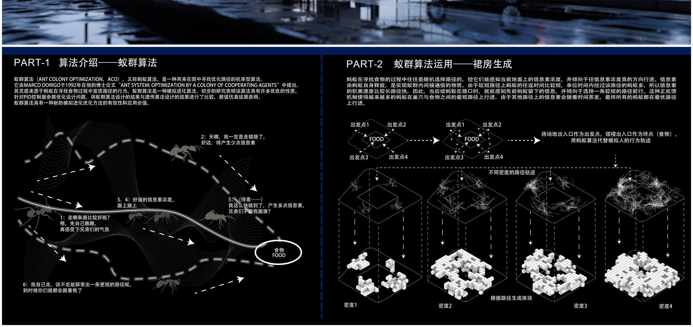
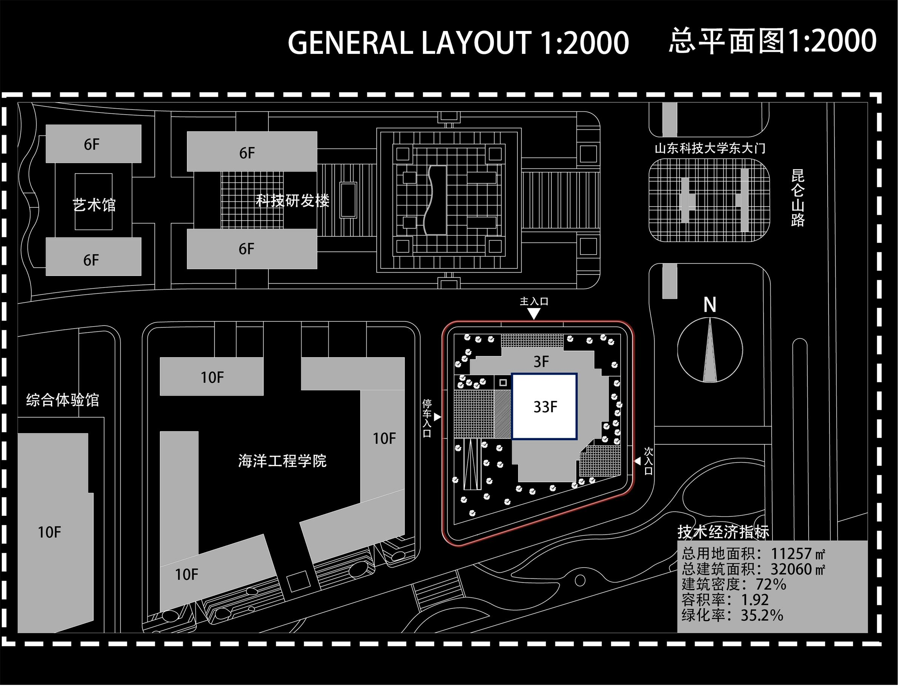
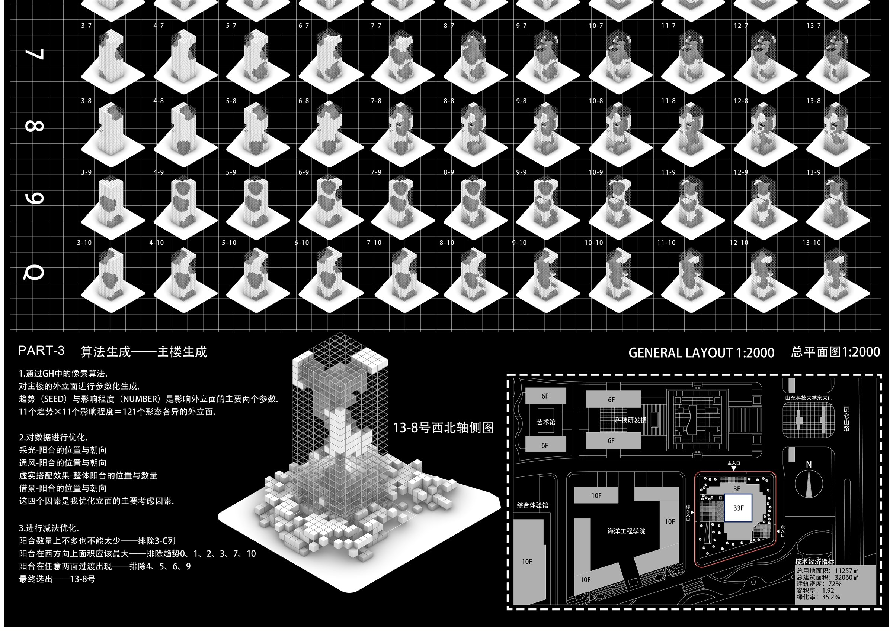
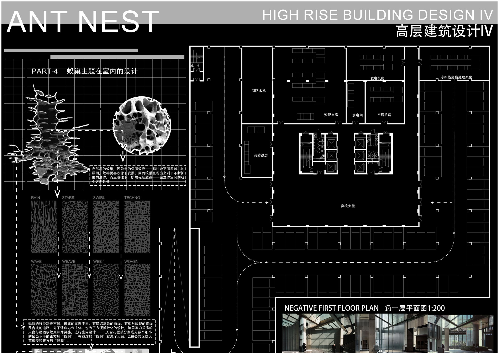
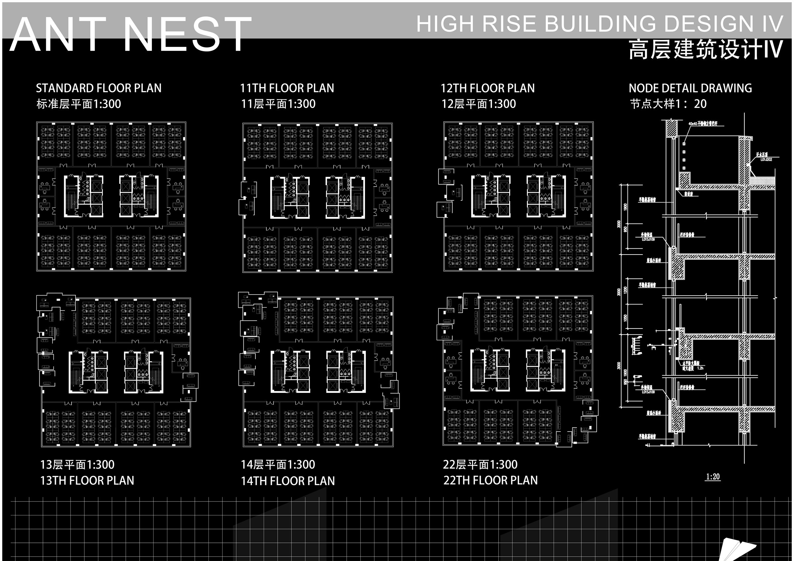
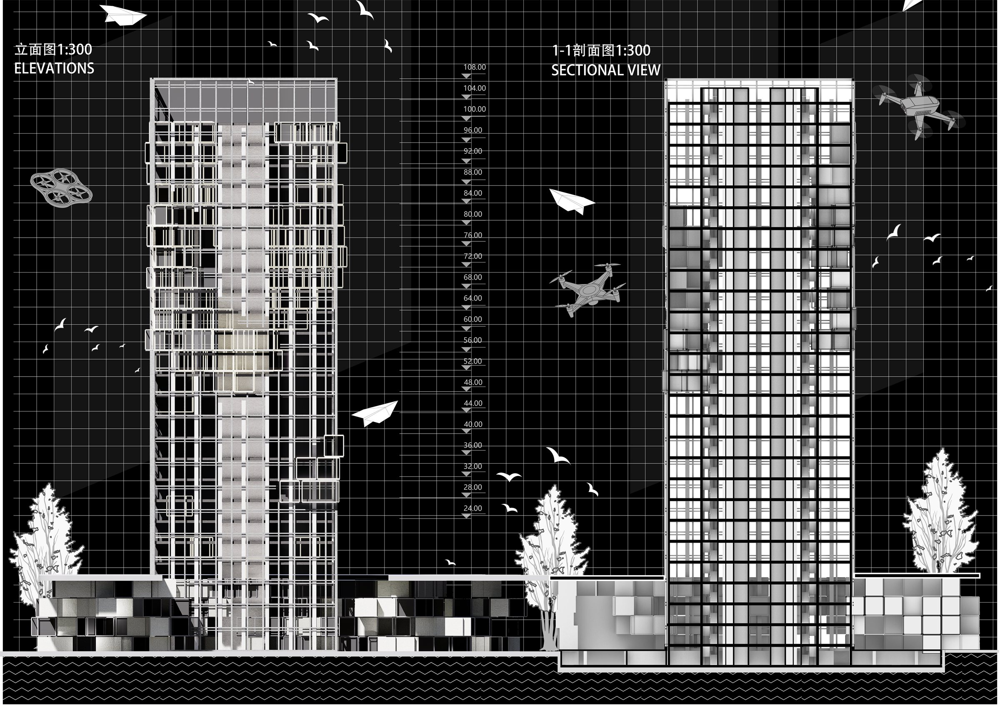
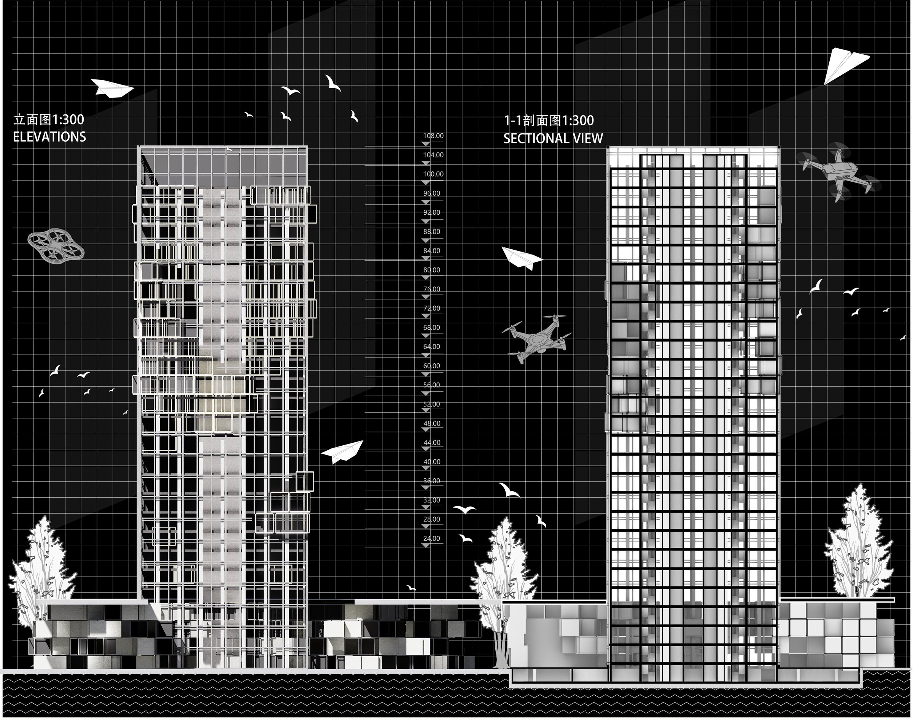

PROJECT NO. 05 · FIG. 5
高层建筑设计HIGH-RISE DESIGN
设计说明 DESIGN STATEMENT
本设计以「蚁巢」（ANT NEST）为题，用蚁群算法驱动建筑生成。蚁群算法（ACO）由 Marco Dorigo 于 1992 年提出，灵感来自蚂蚁觅食发现路径的行为：信息素在较短路径上积累更快，正反馈机制让群体最终收敛于最优路径。设计分三步：PART-1 算法介绍；PART-2 裙房生成——将场地出入口作为出发点、塔楼出入口作为终点（食物），用蚂蚁算法模拟人的行为轨迹，得到不同密度的路径；PART-3 主楼生成——通过 GH 像素算法对主楼外立面参数化生成，11 个趋势 × 11 个影响程度 = 121 个形态各异的外立面，再以采光、通风、虚实搭配、借景四个因素做减法优化，选出最终立面。基地位于山东科技大学东大门区域，总建筑面积 32060 ㎡。
Titled "Ant Nest", the high-rise is generated by Ant Colony Optimisation (ACO), proposed by Marco Dorigo in 1992 and inspired by how ants discover paths while foraging: pheromone accumulates faster on shorter routes, and positive feedback converges the colony on the optimal path. The design proceeds in three parts: Part 1 introduces the algorithm; Part 2 generates the podium — site entrances act as starting points and tower entrances as destinations (food), so simulated ant trails trace movement paths of different densities; Part 3 generates the tower — a pixel algorithm in Grasshopper parametrises the facade: 11 trends × 11 degrees = 121 distinct facades, then four factors (daylight, ventilation, solid-void balance and borrowed views) drive subtractive optimisation to the final facade. The site stands at the east gate of Shandong University of Science and Technology; GFA 32,060 m².
主效果图 MAIN RENDERING
「蚁巢」塔楼在山东科技大学东大门区域的城市形象：参数化生成的阳台肌理如蚁巢般附着塔身。

算法介绍与裙房生成 ALGORITHM & PODIUM GENERATION
PART-1 算法介绍：蚁群算法（ACO）由 Marco Dorigo 于 1992 年在博士论文中提出，灵感来自蚂蚁觅食发现路径的行为。PART-2 裙房生成：蚂蚁随机选择路径，但能感知信息素浓度并倾向高浓度方向行进；较短路径上蚂蚁往返快、信息素积累快，正反馈使群体最终行走在最优路径上。将场地出入口作为出发点、塔楼出入口作为终点（食物），用蚂蚁算法模拟人的行为轨迹，得到不同密度的路径轨迹。
Part 1, the algorithm: ACO was proposed by Marco Dorigo in his 1992 doctoral thesis, inspired by ants finding paths while foraging. Part 2, podium generation: ants choose routes at random yet sense pheromone and favour the stronger trail; shorter routes accumulate pheromone faster, and positive feedback steers the colony onto the optimal path. Site entrances become starting points and tower entrances the food, so simulated ants trace human movement as path tracks of different densities.




总平面图 MASTERPLAN
总平面图（1:2000）：基地位于山东科技大学东大门区域，总用地面积约 11257 ㎡，总建筑面积 32060 ㎡，建筑密度 72%，绿化率 35.2%。
Master plan (1:2000): the site sits by the east gate of Shandong University of Science and Technology — site area about 11,257 m², GFA 32,060 m², coverage 72%, greening 35.2%.


主楼生成 TOWER GENERATION
PART-3 主楼生成：① 通过 GH 中的像素算法对主楼外立面参数化生成，趋势（SEED）与影响程度（NUMBER）是两个主要参数——11 个趋势 × 11 个影响程度 = 121 个形态各异的外立面；② 数据优化：采光、通风、虚实搭配、借景是优化立面的四个主要考虑因素；③ 减法优化：阳台数量不多不少（排除 3、C 列）、阳台西向面积最大（排除趋势 0、1、3、7）、阳台在任意两面过渡出现（排除 4、5、6、9），最终选出 13.8 号方案。
Part 3, tower generation: ① a pixel algorithm in Grasshopper parametrises the facade — trend (seed) and degree (number) are the two main parameters: 11 × 11 = 121 distinct facades; ② data optimisation: daylight, ventilation, solid-void balance and borrowed views are the four key criteria; ③ subtractive optimisation: balcony count neither too many nor too few (rows 3 and C excluded), balcony area greatest on the west (trends 0, 1, 3, 7 excluded), balconies transitioning across any two faces (4, 5, 6, 9 excluded) — leaving scheme 13.8 as the final choice.



一层平面图与一层大堂效果图 GROUND FLOOR & LOBBY RENDERING
一层平面（1:200）：大堂、服务大厅、报告厅、公共展厅与健身房组织在裙房首层，附一层大堂效果图。
Ground floor plan (1:200): lobby, service hall, lecture hall, public gallery and gym line the podium, with a lobby rendering.

负一层平面图与二层平面图和餐厅效果图 LOWER & SECOND FLOOR WITH RESTAURANT
负一层平面（1:200）：消防水池、消防泵房、变配电房、空调机房与穿梭大堂；二层平面（1:200）：办公室、中小会议室与休闲区围绕共享空间布置；餐厅效果图：二层餐饮空间以档口组织。
Basement plan (1:200): fire tank, pump room, substation, plant rooms and shuttle lobby. Second floor plan (1:200): offices, meeting rooms and lounges around shared space. Restaurant rendering: second-floor dining organised around food stalls.


塔楼标准层平面图 TOWER STANDARD FLOORS
塔楼标准层平面（1:300）：办公单元沿核心筒布置，阳台随参数化立面收分组合。
Tower standard floor plans (1:300): office units around the core, with balconies tapering and recombining along the parametric facade.



节点大样图 NODE DETAIL
节点大样（1:20）：展示幕墙与阳台的构造关系。
Node detail (1:20): how the curtain wall and the balcony meet.


立面与剖面图 ELEVATION & SECTION
立面与剖面图：塔楼的竖向秩序与剖面关系，阳台肌理随立面收分变化。
Elevation and section: the tower's vertical order in section, with the balcony texture tapering along the facade.

